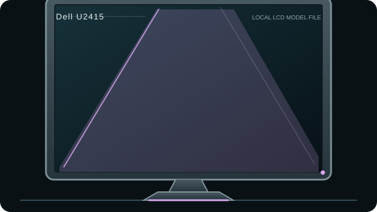

[ INDIVIDUAL COMPONENT // DISPLAYS ]
Dell UltraSharp U2415
24.1-inch 16:10 WUXGA IPS monitor with DisplayPort multi-stream output and an integrated USB 3.0 hub.

IDENTIFICATION: Match the complete model and regional suffix on the rear label. This record summarizes published specifications; it is not a substitute for the exact unit manual, cable requirements or physical condition check.
Specifications
| Catalog subcategory | LCD displays |
|---|---|
| Exact product / family | Dell UltraSharp U2415 |
| Panel and native resolution | 24.1-inch IPS LCD, 1920 × 1200 (16:10) |
| Native timing | 1920 × 1200 at up to 60 Hz |
| Inputs / companion ports | DisplayPort, Mini DisplayPort, two HDMI/MHL inputs; DisplayPort MST out; USB 3.0 hub |
| Revision and model distinction | The U2415 has no USB-C input or USB-C power delivery. Do not mistake the HDMI/MHL support or USB hub for USB-C. Confirm regional suffix and cable/adapter capability; single-link adapters may constrain modes. |
Host compatibility and connection notes
Use DisplayPort, Mini DisplayPort or HDMI for picture. The DP output can participate in daisy-chain/MST setups only when the GPU, operating system and downstream display support MST. USB-A hub ports require a separate USB upstream cable; they are not a video input.
MST compatibility and supported downstream timing depend on GPU/driver/OS and the complete chain. The 16:10 native 1920 × 1200 mode is not interchangeable with 16:9 1080p when scaling or aspect handling matters.
Preservation notes
Record the rear-label model, serial/date code, included stand/accessories, tested input, source timing, image condition and calibration state. Keep the matching manual and cable/adaptor chain with the unit; use qualified service procedures for internal work.
Manufacturer documentation and sources
- Dell — U2415 support and manualsDell owner guide and model documentation.
- TFTCentral — Dell U2415 reviewIndependent review of the exact U2415 model and its connectivity.